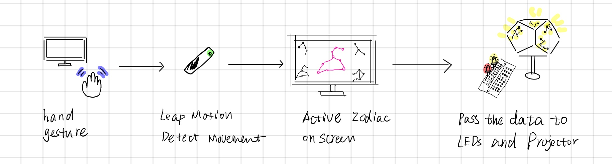
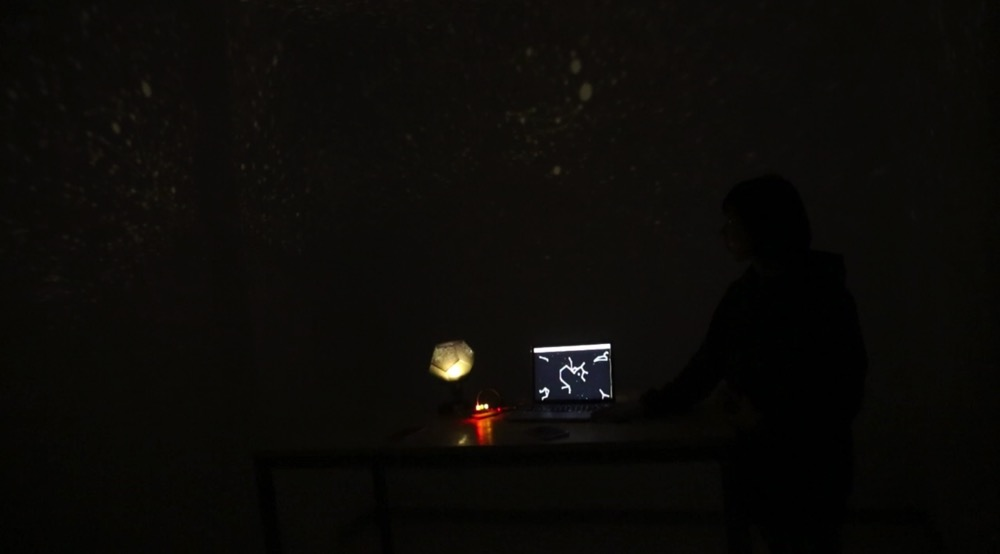
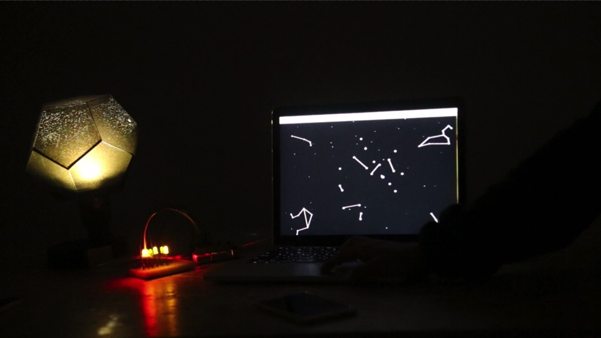
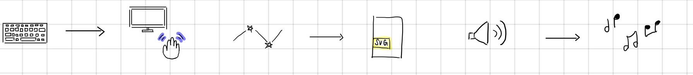

Starry Night | Interactive Constellation with Hand Tracking
My Role Ideation and Coding
Time 1 month | 2016
Toolkit Processing, Leap Motion, Arduino
Course Interaction Lab
Context Interactive Media Arts, New York University Shanghai
Project Description
Starry Night is an interactive and immersive project that brings urban people a piece of starry night they can enjoy at home.
Ideation
When is the last time that you have seen a starry sky? We asked this question to a lot of people around us and surprisingly found out that most people can hardly recall such an experience that happened recently. Some people born in a big city even told us that they've “never seen a starry night in their lives” yet.
Born and raised in urban cities, beautiful nature is a luxury to many of us. We want to share a piece of virtual sky to people - a piece of sky that we can interact with to create music and enjoy at home.
System Diagram
Virtual Interaction (Leap Motion) - > Digital Communication (Processing) - > Physical Output (Arduino)
Design Process and Prototyping
 
The first iteration uses a keyboard press to control the Processing sketch. Based on the times a key is pressed, different stars will connect together on-screen to form a constellation. When all the stars of the constellation are fully connected, a physical LED will light up. Connecting all four constellations will light up an LED inside a star projector which will project stars onto a ceiling. A matte star projector box was bought online and we soldered a LED inside the projector box to work with our Arduino circuit.
Feedback and Reflections
After some user testing, we realized that our first prototype was limited in several ways, so keeping these problems and goals in mind, we devised a few solutions.
Reflection: The interaction with keyboard is not so interesting.
Solution: Use Leap Motion to allow hand gestures to interact with screen instead of keyboard giving users more flexibility and dimensionality. Small particle systems are generated with hand movement to give user better visual feedback of their hand position.
Next Steps
For the physical experience, instead of lighting up LEDs in the breadboard and star projector, our next step will be to create a projection experience to light up a specific Zodiac constellation in the projection instead, making Starry Night into a complete immersive experience.
We can also improve the digital interaction so that the project can be a more playable musical instrument.
Why it is important to others
Through digital and physical interactions, participants can experience a starry night in a new way. Because of pollution, a lot of people living in the city haven’t seen stars for a long time. This project gives people the chance to appreciate the beauty of stars and constellations when natural landscape is absent. It is valuable to keep in mind how magical a starry sky looks like.
Why it is important to me
My project production partner is Filipino American and happens to share the same birthday as me. We found this bond magical so making a project around zodiac and stars became a special thing to us. It is also my very first interactive project and the first time I learnt coding. Technically, I learnt a lot in both software and hardware programming. Interaction wise, it opened my door to explore the field of human-computer interaction.